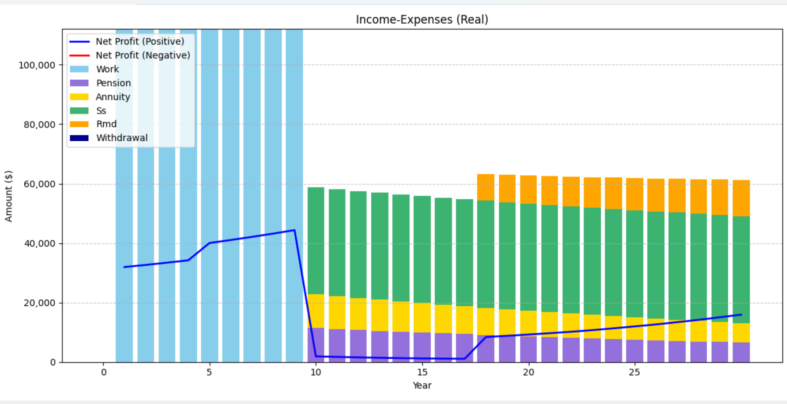
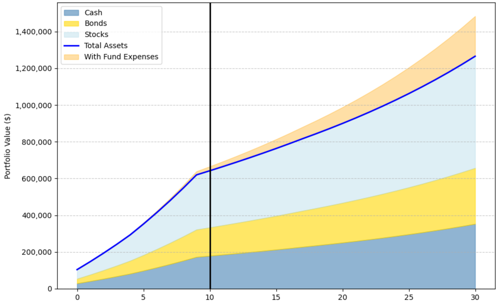
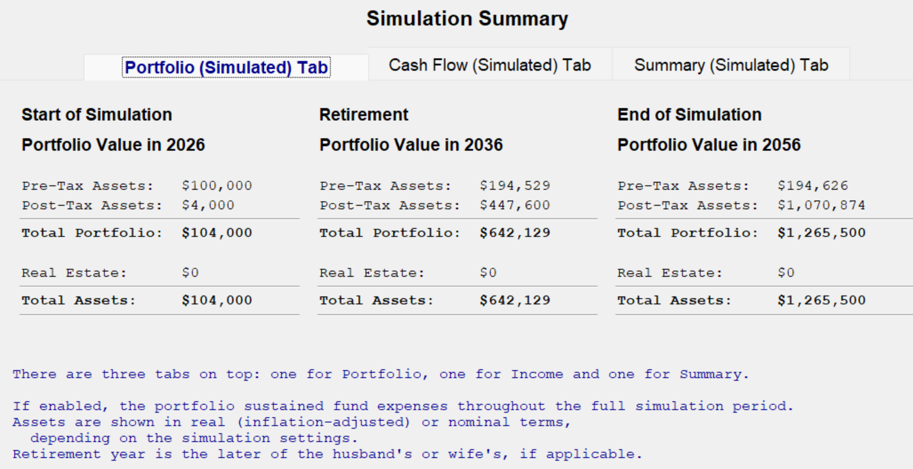
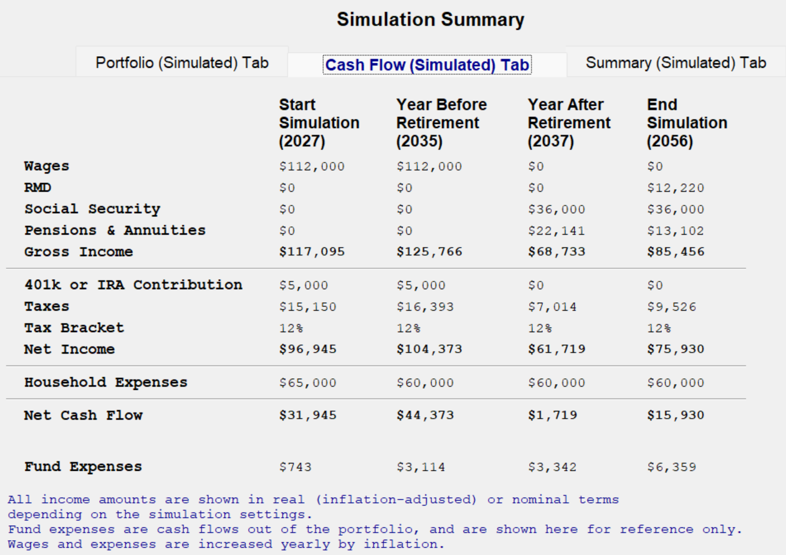
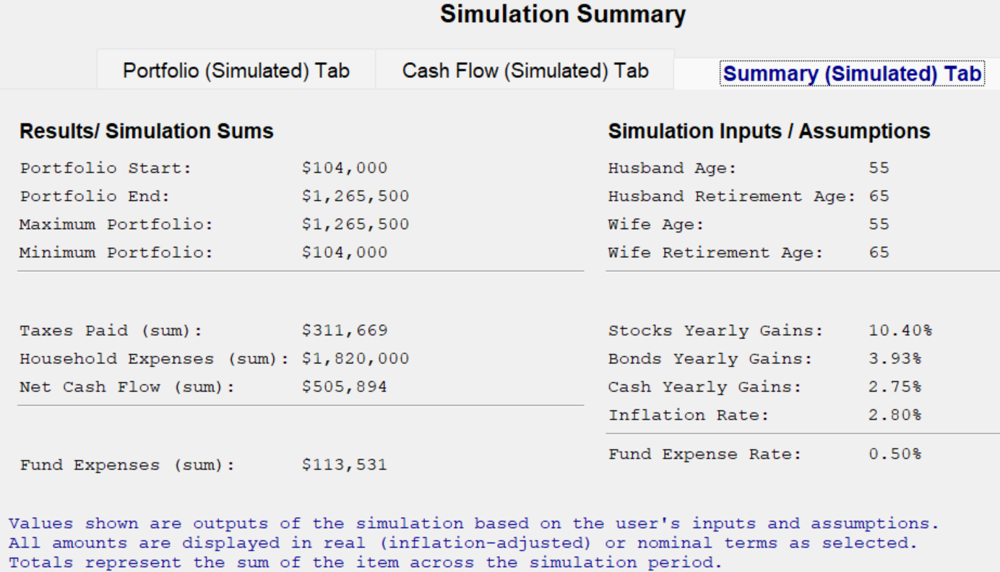
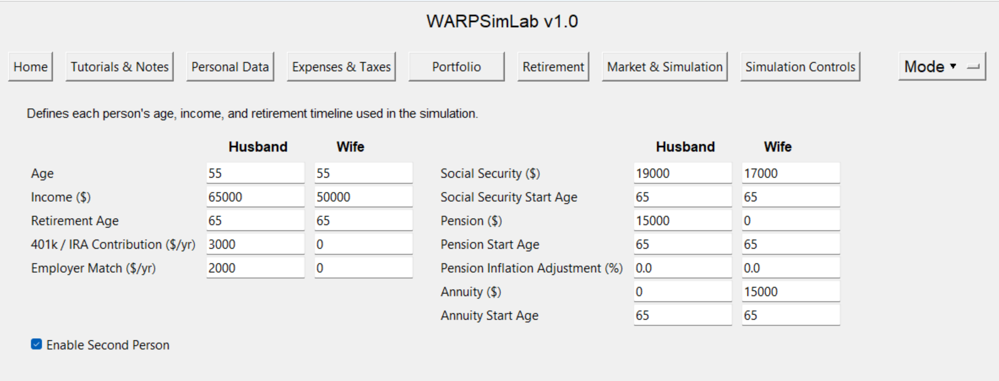
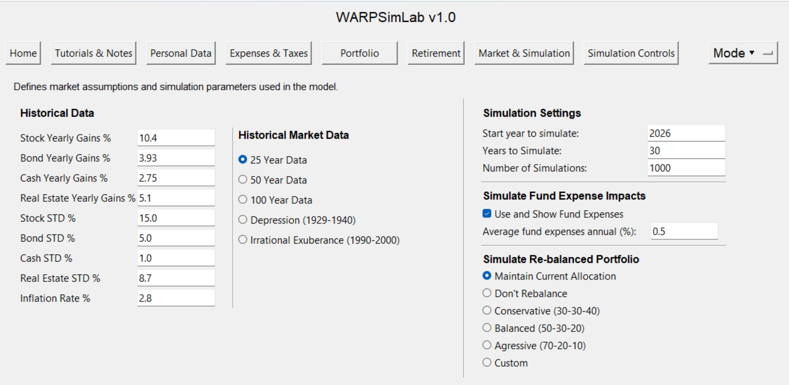
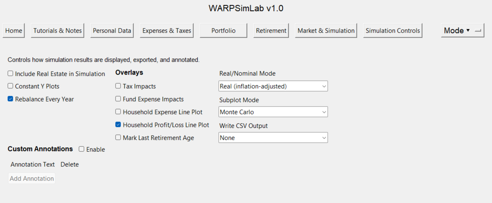

Historical Window Analysis (Default)
Run the same plan across many rolling historical periods to see how outcomes depend on market timing and economic conditions.
WARPSimLab is a free financial simulation platform designed to help users understand how income, expenses, taxes, and investment portfolios behave over time. It models cash flow, compounded growth, and inflation-adjusted results, allowing you to explore long-term financial scenarios and compare outcomes at the start, retirement, and end of each simulation.
The simulator supports Historical Window analysis (default), Monte Carlo simulation, and deterministic projections so you can compare how the same plan behaves across real historical periods and simulated market paths.
WARPSimLab is for educational use only. It does not provide financial, investment, tax, or legal advice, and does not recommend specific investments. Read the full legal disclaimer.
Download the SimulatorWARPSimLab models income, expenses, taxes, and portfolio behavior over time using user-defined inputs and assumptions. Each run tracks how cash flow and portfolio balances evolve year by year under different conditions.
The default mode uses Historical Window analysis, applying the same plan across many rolling historical periods derived from long-term market data. This allows you to see how outcomes depend on market timing and economic conditions.
In addition, Monte Carlo simulation and single-scenario projections are available, allowing you to compare how the same plan behaves across simulated market paths and fixed assumptions. Results include cash flow projections, portfolio changes, and summary balances at key points such as the start of the simulation, retirement, and the end of the simulation period.
The simulator supports both inflation-adjusted and non-inflation-adjusted results, allowing you to compare values in today`s dollars and future dollars and better understand how inflation affects purchasing power over time.
For more detail, see the FAQ or download WARPSimLab to explore the simulator directly.
WARPSimLab is a standalone personal finance application that runs entirely on your computer. Financial data entered into the simulator is not transmitted to external services or stored online.
This design is intentional. It allows you to explore financial scenarios privately, without connecting accounts or sharing personal data, while maintaining full control over your inputs and simulation results.
WARPSimLab provides tools for exploring how financial systems behave over time under different assumptions. Download the simulator to explore these features directly.
Run the same plan across many rolling historical periods to see how outcomes depend on market timing and economic conditions.
Explore how the same scenario behaves across many simulated market paths to understand variability and uncertainty.
Explore how the timing of market gains and losses affects retirement outcomes, including early, mid, and late downturn scenarios with varying severity and duration.
Adjust assumptions and compare how different scenarios affect long-term outcomes.
Model income sources, expenses, and net cash flow over time to understand long-term financial behavior.
Generate printable executive summary reports that consolidate simulation highlights, portfolio analysis, cash-flow results, charts, and assumptions into a single document.
Analyze how portfolio balances evolve over time under different return assumptions and asset allocations.
Simulate income-expense or income-withdrawal scenarios to explore different retirement strategies.
Compare results in today`s dollars and future dollars to understand how inflation affects purchasing power.
These screenshots highlight how WARPSimLab models financial behavior over time, including cash flow, portfolio evolution, and scenario exploration across different assumptions.
Each view is designed to help you understand how financial outcomes change under different assumptions and market conditions.

Income sources, expenses, and how cash flow evolves over time across the simulation.

Portfolio allocation, balance growth, and how investment outcomes change over time.

Compare how different assumptions affect income and portfolio outcomes side by side.

Portfolio value at key milestones, including the start, retirement, and end of the simulation.

Detailed breakdown of income, taxes, expenses, and net cash flow at key points in time.

Overall results, key financial totals, and the assumptions driving the simulation.

Inputs for ages, income, retirement timing, Social Security, pensions, and annuities.

Historical market assumptions, simulation settings, and portfolio rebalancing controls.

Display settings, overlays, and output options for analyzing simulation results.